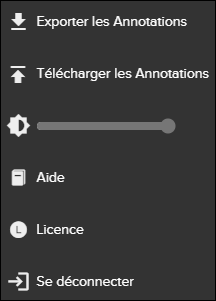

Les annotations peuvent être exportées et importées dans Pinpoint. Bien que cette fonctionnalité soit applicable pour Pinpoint Viewer et Pinpoint Standalone Light, elle est principalement utilisée pour Pinpoint Standalone. Elle s'applique au scénario suivant:
- L'utilisateur final reçoit une version autonome de Pinpoint avec des données (version 1).
- L'utilisateur final crée des annotations dans cette version.
- L'utilisateur final reçoit une nouvelle révision de Pinpoint autonome avec des données mises à jour (version 2).
- L'utilisateur final souhaite transférer les annotations de la version 1 à la version 2.
Pour transférer des annotations d'une version autonome à l'autre, faire les étapes suivantes:
-
Dans la barre d'actions, cliquez sur le bouton
 Autres actions.
Autres actions.

Plus menu déroulant
-
Dans le menu déroulant
Autres actions, sélectionnez Télécharger les
Annotations.
S'il existe déjà des annotations précédentes avec pièce jointe, un message de confirmation apparaît.